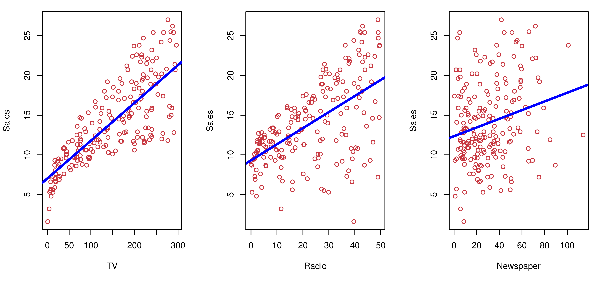
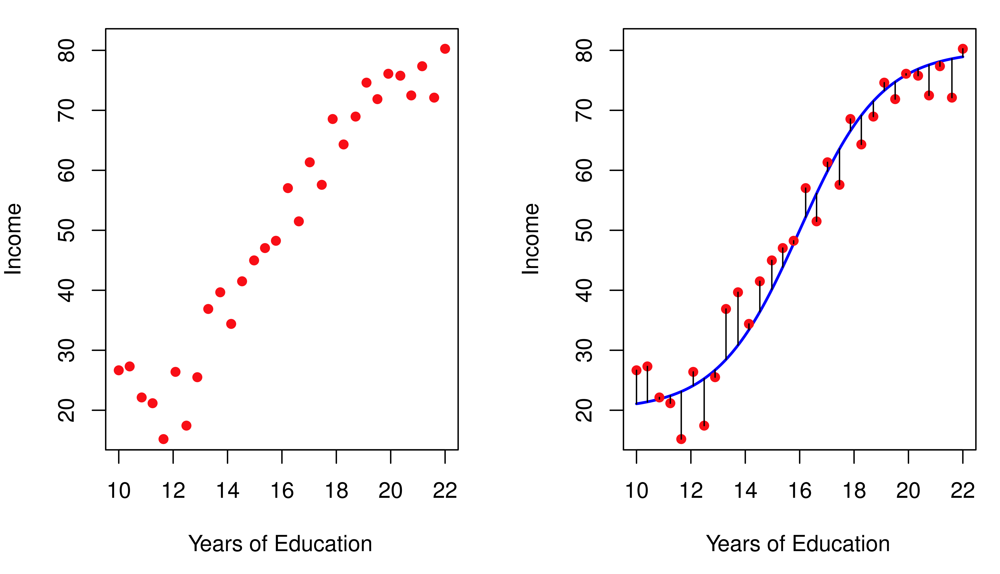
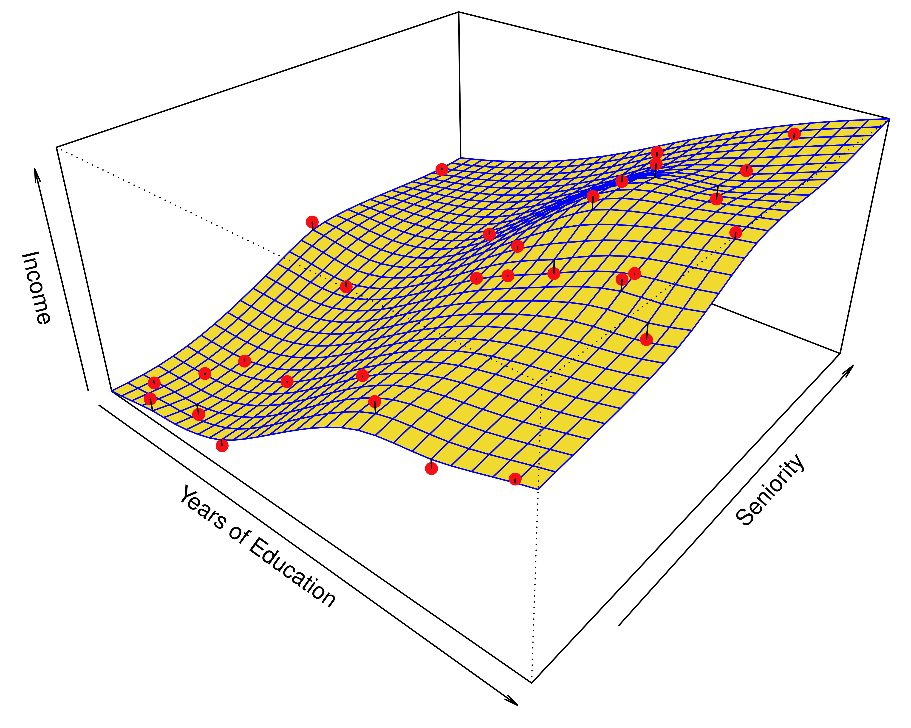
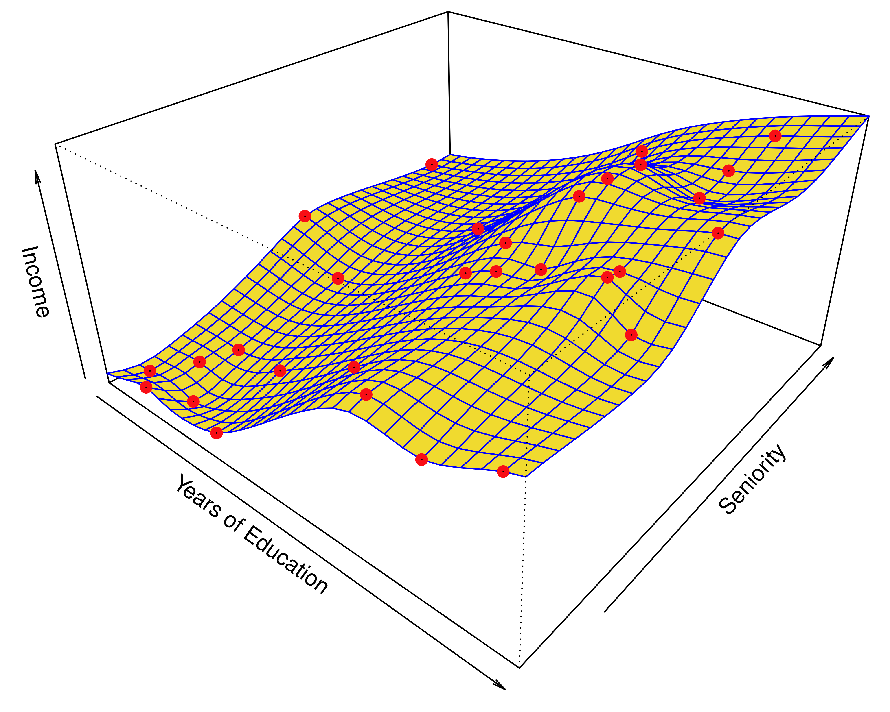
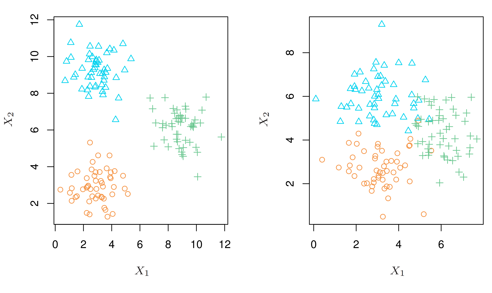
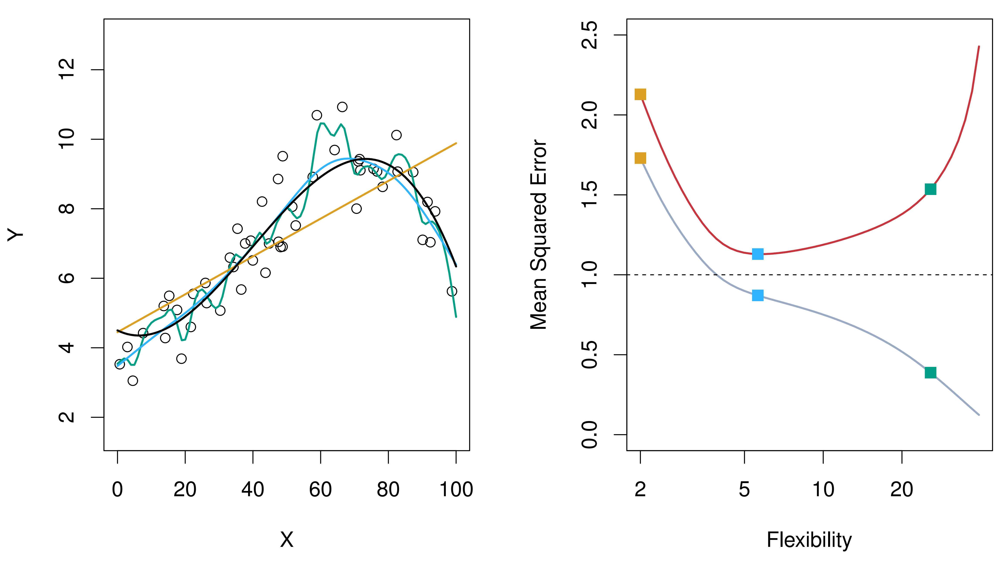
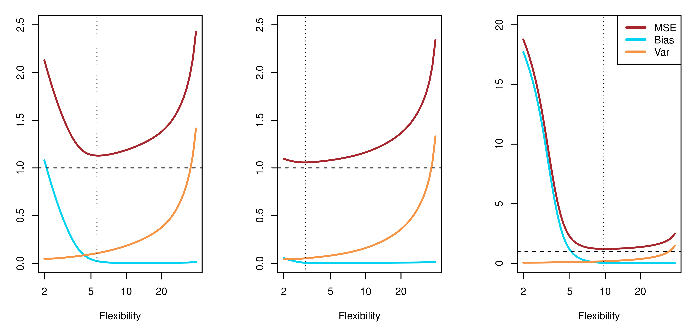
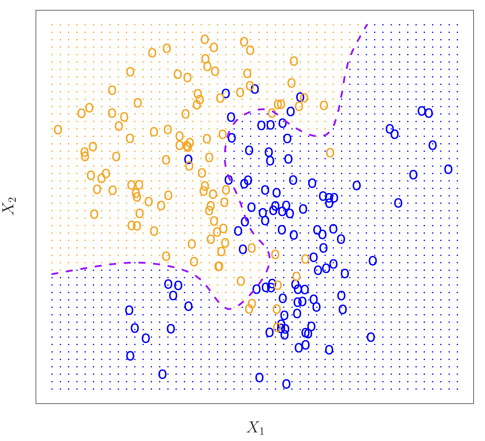

graph LR
A[Data Mining] --> C(Common Ground)
B[Machine Learning] --> C
D[Statistical Learning] --> C
C --> E[Insights & Predictions]
Introduction to Statistical Learning
Statistical learning is a vast set of tools for understanding data. These tools can be classified as supervised or unsupervised.
- Supervised statistical learning involves building a statistical model for predicting, or estimating, an output based on one or more inputs.
- With unsupervised statistical learning, there are inputs but no supervising output; nevertheless, we can learn relationships and structure from such data.
This chapter introduces many of the key concepts of statistical learning, focusing on the fundamental ideas, which include data mining, machine learning and statistical learning relationship, estimating f, the trade-off between prediction accuracy and model interpretability, supervised versus unsupervised learning, and assessing model accuracy using mean square error, the bias-variance, Bayes error rate.
Data Mining, Machine Learning, and Statistical Learning
Let’s clarify the relationship between these often-used terms:
Data Mining: The process of discovering patterns and insights from large datasets, often using computational techniques. It emphasizes finding any interesting pattern, even if it’s not directly related to a specific prediction task.
Machine Learning: A field of computer science focused on algorithms that can learn from data. It’s heavily focused on prediction – enabling computers to make accurate predictions on new, unseen data.
Statistical Learning: A subfield of statistics that focuses on developing and applying statistical models and methods for prediction and inference. It emphasizes understanding the relationships between variables and making inferences about the underlying data-generating process.
All the concepts are focusing on extracting information from data.
The Advertising Example
To motivate our study, let’s consider a simple example. A company wants to understand how advertising spending affects product sales.
Data:
Salesof a product in 200 different markets, along with advertising budgets forTV,radio, andnewspaper.Goal: Build a model to predict
salesbased on the advertising budgets in the three media.Why? The company can’t directly control sales, but can control advertising spending. A good model helps them optimize their advertising budget.
Input and Output Variables
In the advertising example:
Input variables (X): Advertising budgets (TV, radio, newspaper). These are also called predictors, independent variables, or features. We often denote them as X₁, X₂, X₃, …, Xₚ.
Output variable (Y): Sales. This is also called the response or dependent variable. We’re trying to predict or understand Y.
Statistical learning will use all these terms interchangeably.
- Example:
- X₁ = TV budget
- X₂ = Radio budget
- X₃ = Newspaper budget
- Y = Sales
Visualizing the Advertising Data

- Each plot shows sales versus one advertising medium.
- The blue line represents a simple linear model (least squares fit) to predict sales using each medium individually. Least squares is an algorithm to fit data. We’ll learn more about this in Chapter 3.
- Observations: There’s a positive relationship between advertising spending and sales for TV and radio. The relationship with newspaper spending is less clear.
The General Model
More generally, we assume a relationship between the response Y and predictors X:
\[ Y = f(X) + \epsilon \]
- Y: The quantitative response variable we want to predict.
- X: (X₁, X₂, …, Xₚ), a vector of p predictors.
- f(X): An unknown function representing the systematic relationship between X and Y. This is what we want to estimate!
- ε: A random error term, independent of X, with a mean of zero. It represents the variation in Y that cannot be explained by f(X).
Goal of Statistical Learning: Estimate the unknown function f.
Understanding the Error Term (ε)
The error term, ε, captures all the factors that affect Y but are not included in our predictors X. This could include:
- Unmeasured variables: Factors influencing Y that we didn’t or couldn’t measure.
- Measurement error: Inaccuracies in how we measured X or Y.
- Randomness: Inherent variability in Y that can’t be perfectly predicted.
Note
The error term is crucial. It acknowledges that our models are approximations of reality. Even the “best” model won’t be perfect.
Example: Income vs. Education

Left: Observed
income(in thousands of dollars) versusyears of educationfor 30 individuals.Right: The true underlying relationship (blue curve), which is usually unknown (but known here because the data were simulated). The black line segments represent errors associated with each data.
Observation: More years of education generally lead to higher income, but there’s variation (the error).
Why Estimate f?
There are two main reasons to estimate f:
Prediction: We want to predict Y given a set of X values. We don’t necessarily care about the exact form of f, just that it gives accurate predictions (treat f as a “black box”).
\[ \hat{Y} = \hat{f}(X) \]
- Ŷ: The prediction of Y.
- f̂: Our estimate of f.
Inference: We want to understand the relationship between Y and X. We do care about the form of f. We want to answer questions like:
- Which predictors are associated with the response?
- Is the relationship positive or negative?
- Is the relationship linear or more complex?
Prediction: Reducible and Irreducible Error
The accuracy of our prediction, Ŷ, depends on two types of error:
Reducible Error: Error due to our estimate of f (f̂) not being perfect. We can reduce this error by choosing better statistical learning techniques.
Irreducible Error: Error due to the random error term, ε. Even if we knew the true f, we cannot predict ε. This sets a limit on how accurate our predictions can be. \[E(Y - \hat{Y})^2 = \underbrace{[f(X) - \hat{f}(X)]^2}_{\text{Reducible}} + \underbrace{Var(\epsilon)}_{\text{Irreducible}}\]
Note
Our goal is to minimize the reducible error.
Inference: Understanding the Relationship
When our goal is inference, we want to understand how Y changes as a function of X₁, …, Xₚ. We’re interested in questions like:
- Which predictors matter? Are all the Xᵢ related to Y, or only a subset?
- What’s the nature of the relationship? Is it positive, negative, linear, non-linear?
- Can we simplify the model? Can we get a good understanding with a simpler model (e.g., a linear model)?
We care about interpretability, the form of f, and statistical significance.
Example: Modeling for Prediction
Scenario: A company wants to target a direct-marketing campaign to individuals likely to respond positively.
- Predictors (X): Demographic variables (age, income, location, etc.).
- Response (Y): Response to the campaign (positive or negative).
- Goal: Accurately predict Y using X. The company doesn’t need to deeply understand why each predictor is related to the response, only that the prediction is accurate.
Note
This is a classic prediction problem. The model is a “black box”.
Example: Modeling for Inference
Scenario: Analyze the Advertising data (Figure 2.1).
- Predictors (X): TV, radio, and newspaper advertising budgets.
- Response (Y): Sales.
- Goal: Understand how each advertising medium affects sales. Questions to answer:
- Which media are associated with sales?
- Which media generate the biggest boost in sales?
- How large is the effect of TV advertising on sales?
Note
This is an inference problem. We want to understand the relationships.
How Do We Estimate f?
We use training data to “teach” our statistical learning method how to estimate f.
Training data: A set of observed data points: {(x₁, y₁), (x₂, y₂), …, (xₙ, yₙ)}, where:
- xᵢ = (xᵢ₁, xᵢ₂, …, xᵢₚ)ᵀ is the vector of predictor values for the ith observation.
- yᵢ is the response value for the ith observation.
Goal: Find a function, f̂, such that Y ≈ f̂(X) for any observation (X, Y).
Two broad approaches: Parametric and non-parametric methods.
Parametric Methods
A two-step, model-based approach:
Assume a functional form for f. For example, assume f is linear:
\[ f(X) = \beta_0 + \beta_1 X_1 + \beta_2 X_2 + ... + \beta_p X_p \]
This reduces the problem to estimating the p + 1 coefficients (β₀, β₁, …, βₚ).
Use training data to fit or train the model. Find the values of the parameters (β₀, β₁, …, βₚ) that best fit the data. A common method is (ordinary) least squares.
Note
Parametric methods simplify the problem by assuming a specific form for f.
Example: Linear Model Fit to Income Data

A linear model (yellow plane) fit to the
Incomedata (Figure 2.3).Red dots are the observed data points.
The model assumes:
income ≈ β₀ + β₁ × education + β₂ × seniority.Linear model is relatively inflexible because it can generate linear functions
Parametric Methods: Advantages and Disadvantages
Advantage: Simplifies the problem of estimating f. It’s easier to estimate a few parameters than an entirely arbitrary function.
Disadvantage: The assumed form of f might be wrong. If the true f is very different from our assumed form, our estimate will be poor.
Overfitting: If we use a very complex (flexible) model, we might overfit the data. This means the model follows the noise (random error) too closely, resulting in poor predictions on new data.
Non-parametric Methods
- Do not make explicit assumptions about the functional form of f.
- Seek an estimate of f that gets as close to the data points as possible, without being too rough or wiggly.
- Advantage: Can accurately fit a wider range of possible shapes for f. Avoids the risk of making a wrong assumption about the form of f.
- Disadvantage: Requires a very large number of observations to get an accurate estimate of f.
Example: Thin-Plate Spline Fit to Income Data

- A thin-plate spline (yellow surface) fit to the
Incomedata. - This is a non-parametric method. No pre-specified model is assumed.
- The fit is much closer to the true f (Figure 2.3) than the linear fit.
- This is a smooth fit.
Example: Overfitting with a Rough Spline

- Same data, but a rougher thin-plate spline fit.
- This fit perfectly matches the training data (zero error on training data!).
- BUT: This is an example of overfitting. The fit is too wiggly and will likely perform poorly on new data. It has captured the noise, not just the underlying pattern.
The Trade-Off Between Prediction Accuracy and Model Interpretability
Flexibility: How many different shapes of functions can the method fit?
- Less flexible (restrictive): Linear regression (only linear functions).
- More flexible: Thin-plate splines, neural networks.
Interpretability: How easy is it to understand the fitted model?
- More interpretable: Linear regression (easy to understand coefficients).
- Less interpretable: Complex, non-linear models (hard to see how each predictor affects the response).
General rule: As flexibility increases, interpretability decreases.
Important Trade-off: We often have to choose between more accurate, but less interpretable models, and simpler, more interpretable models.
Why Choose a More Restrictive Method?
Even if we only care about prediction, a more restrictive model (like linear regression) can sometimes outperform a more flexible model!
Reasons:
- Inference: If we’re interested in understanding the relationship, restrictive models are more interpretable.
- Overfitting: Flexible models can overfit the training data, leading to poor predictions on new data. A simpler model might generalize better.
- Curse of Dimensionality: With many predictors, flexible models can be hard to fit well and require huge amounts of data.
Supervised vs. Unsupervised Learning
- Supervised Learning: We have both predictors (X) and a response (Y) for each observation. We want to learn the relationship between X and Y.
- Examples: Regression, classification.
- Most of the methods in this book are supervised.
- Unsupervised Learning: We only have predictors (X), no response (Y). We want to find patterns and structure in the data.
- Example: Cluster analysis (grouping observations into clusters).
- Semi-supervised Learning: A mix. We have (X, Y) for some observations, but only X for others.
Note
The distinction between supervised and unsupervised learning isn’t always clear-cut.
Example: Cluster Analysis

150 observations, two variables (X₁, X₂).
Left: Three well-separated groups (clusters). Clustering should easily identify these.
Right: Overlapping groups. Clustering is much harder.
Goal: Identify distinct groups without knowing the group labels beforehand.
In the examples shown, there are only two variables, and we can check the scatterplots to identify clusters. But in practice, we cannot do that, and we need to use clustering and other unsupervised learning approaches.
Regression vs. Classification Problems
- Regression: The response variable (Y) is quantitative (numerical).
- Example: Predicting income, house price, stock return.
- Classification: The response variable (Y) is qualitative (categorical).
- Example: Predicting whether someone will default on a loan (yes/no), which brand of product they’ll buy (A/B/C), or a medical diagnosis (disease 1/disease 2/no disease).
Note
- Some methods are better suited to regression, others to classification. But many methods can be used for both.
- Whether the predictors are quantitative or qualitative is usually less important than the type of response.
Assessing Model Accuracy: Regression
Goal: Quantify how well our predictions match the observed data.
Mean Squared Error (MSE): A common measure in regression:
\[ \text{MSE} = \frac{1}{n} \sum_{i=1}^{n} (y_i - \hat{f}(x_i))^2 \]
- yᵢ: The true response value for the ith observation.
- f̂(xᵢ): The predicted response value for the ith observation.
- Lower MSE is better (closer predictions).
Training MSE: Calculated using the training data.
Test MSE: Calculated using new, unseen data (test data). This is what we really care about!
Training MSE vs. Test MSE
We usually don’t care how well the model fits the training data. We care about how well it predicts new data (the test data).
A model with low training MSE might have high test MSE (overfitting!).
Ideally: We’d choose the model with the lowest test MSE.
Problem: We often don’t have test data when building the model.
Solution: Techniques like cross-validation (Chapter 5) can help us estimate the test MSE using the training data.
Example: Training and Test MSE vs. Flexibility

Left: Data simulated from a non-linear f (black curve). Three fits: linear (orange), smooth spline (blue), wiggly spline (green).
Right:
- Training MSE (grey curve): Decreases as flexibility increases.
- Test MSE (red curve): U-shaped. Decreases, then increases (overfitting).
- Dashed line: Minimum possible test MSE (irreducible error).
Observation: The blue curve (moderate flexibility) has the lowest test MSE.
The Bias-Variance Trade-Off
The U-shape in the test MSE curve is due to two competing properties:
- Variance: How much would our estimate of f (f̂) change if we used a different training set?
- High variance: f̂ changes a lot with different training sets (typical of flexible models).
- Low variance: f̂ is relatively stable (typical of less flexible models).
- Bias: The error introduced by approximating a complex real-world problem with a simpler model.
- High bias: The model makes strong (and possibly wrong) assumptions about f (typical of less flexible models).
- Low bias: The model makes fewer assumptions (typical of flexible models).
- Expected test MSE at x0 can be decomposed to: \[E(y_0 - \hat{f}(x_0))^2 = Var(\hat{f}(x_0)) + [Bias(\hat{f}(x_0))]^2 + Var(\epsilon)\]
Bias-Variance Trade-Off: Illustration

- Squared bias (blue), variance (orange), irreducible error (dashed), and test MSE (red) for the three examples.
- Left (non-linear f): Bias decreases rapidly, variance increases slowly.
- Center (nearly linear f): Bias is low, variance increases quickly.
- Right (very non-linear f): Bias decreases dramatically, variance is low.
Key takeaway: Good models need both low variance and low bias. This is a trade-off!
Assessing Model Accuracy: Classification
- Error Rate: The proportion of mistakes made by the classifier.
Training error rate:
\[ \frac{1}{n} \sum_{i=1}^{n} I(y_i \ne \hat{y}_i) \]
- yᵢ: True class label.
- ŷᵢ: Predicted class label.
- I(yᵢ ≠ ŷᵢ): Indicator variable (1 if mistake, 0 if correct).
Test error rate:
Ave(I(y₀ ≠ ŷ₀)). This is what we care about!
- Goal: Choose the classifier with the lowest test error rate.
The Bayes Classifier
- The “ideal” classifier: Assigns each observation to the most likely class, given its predictor values.
- Conditional probability: Pr(Y = j | X = x₀) - the probability that Y = j (class j), given the predictor values x₀.
- Bayes Classifier: Assigns an observation to the class j for which Pr(Y = j | X = x₀) is largest.
- Bayes Decision Boundary: The points where the conditional probabilities for different classes are equal.
- Bayes Error Rate: The lowest possible test error rate achievable. Analogous to the irreducible error.
Example: Bayes Classifier

- Simulated data, two classes (orange, blue).
- Purple dashed line: Bayes decision boundary.
- Orange/blue shaded regions: Regions where the Bayes classifier would predict orange/blue.
- The Bayes error rate is greater than zero because the classes overlap.
K-Nearest Neighbors (KNN)
- Problem: In reality, we don’t know the conditional distribution of Y given X. So, we can’t directly use the Bayes classifier.
- KNN: A non-parametric method that estimates the conditional distribution and then classifies based on the estimate.
- How it works:
- Given a test observation, x₀, find the K closest training observations (the “neighborhood”).
- Estimate the conditional probability for class j as the fraction of neighbors in the neighborhood whose response value is j.
- Classify x₀ to the class with the highest estimated probability.
Example: KNN

Left: Small training set (6 blue, 6 orange). Black cross is the test observation. Circle shows the 3 nearest neighbors (K=3): 2 blue, 1 orange. KNN predicts “blue”.
Right: KNN decision boundary (K=3) for all possible values of X₁ and X₂.
KNN can produce a decision boundary and classifier that’s close to Bayes Classifier.
KNN: The Choice of K
The choice of K (the number of neighbors) controls the flexibility of the KNN classifier.
- Small K: More flexible, lower bias, higher variance (risk of overfitting).
- Large K: Less flexible, higher bias, lower variance.
Example: Figure 2.16 shows KNN fits with K=1 and K=100. K=1 overfits, K=100 is too inflexible.
Finding the best K: We want to choose K to minimize the test error rate. Techniques like cross-validation can help.
Summary
- Statistical learning is about estimating relationships between variables, for prediction and/or inference.
- Parametric methods assume a specific functional form; non-parametric methods don’t.
- There’s a trade-off between model flexibility and interpretability.
- We need to assess model accuracy using test data (or estimates of test error).
- The bias-variance trade-off is fundamental: Good models need both low bias and low variance.
- In classification, the Bayes classifier is optimal, but we often have to approximate it (e.g., with KNN).
- Choosing the right level of flexibility is crucial.
Thoughts and Discussion
- Think about real-world problems you’re interested in. Would you approach them with a focus on prediction, inference, or both?
- Can you think of examples where a simple, interpretable model might be preferable to a more complex, “black box” model, even for prediction?
- How might the “best” model (in terms of test error) depend on the amount of data available?
- How does the concept of “overfitting” relate to the bias-variance trade-off?
- Discuss the differences and similarities between supervised, unsupervised, and semi-supervised learning, and how they apply to real-world problems.